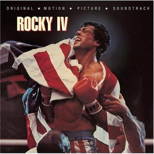
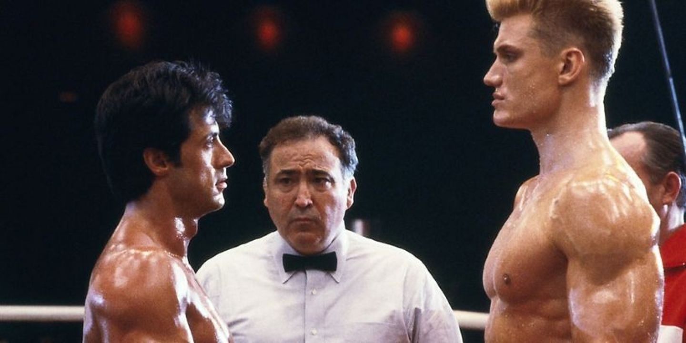

Krótki Zarys Fabularny:
- Film *Rocky IV* to czwarta część serii o bokserze Rocky'm Balboi. Rocky staje do walki z rosyjskim mistrzem boksu, Ivanem Drago, który zabił jego przyjaciela, Apollo Creeda, podczas pojedynku. Film ukazuje rywalizację między dwoma kulturami: amerykańską i radziecką, a także motyw zemsty, determinacji i walki o honor.

Najciekawsze sceny:
- Trening w górach: Rocky trenuje w surowych warunkach, wspinając się po śnieżnych stokach w Rosji, co kontrastuje z technologicznym, wysokowydajnym treningiem Drago.
- Walka z Drago: Jeden z najbardziej emocjonujących momentów filmu, gdzie Rocky staje do walki z niebezpiecznym rywalem na ringu.
- Przemówienie na końcu: Po wygranej walce Rocky wygłasza poruszające przemówienie, w którym mówi o pokoju i wzajemnym zrozumieniu między narodami.
Ciekawostki:
- Scena treningu w Rosji była kręcona w zimnych górach, a Stallone sam uczestniczył w niektórych scenach, mimo trudnych warunków.
- Pod koniec walki Apollo Creeda i Ivana Drago, ten drugi odpycha sędziego, który próbuje rozdzielić bokserów, po czym dalej bije do nieprzytomności swojego rywala. W prawdziwym meczu bokserskim taki czyn miałby podstawy do dyskwalifikacji oraz zarzutów o zabójstwo.
- Film stał się jednym z najbardziej dochodowych w serii, zyskując kultowy status i inspirując kolejne pokolenia.
